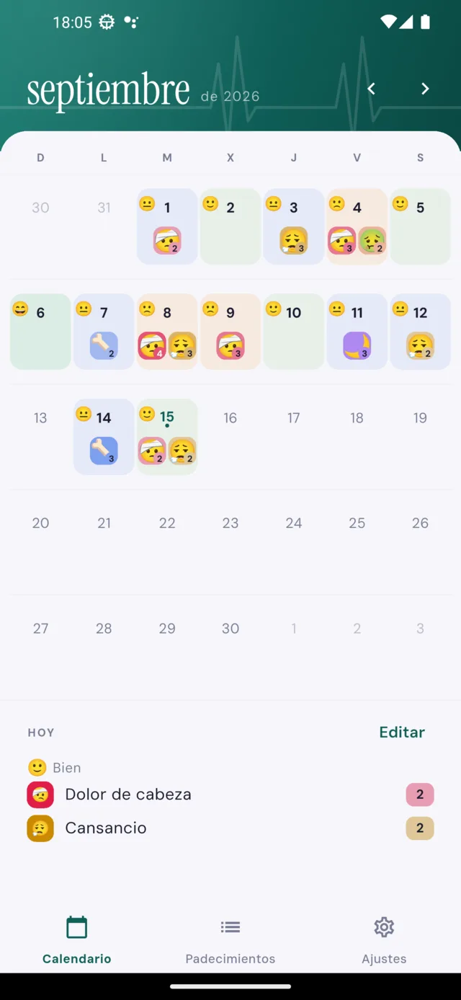
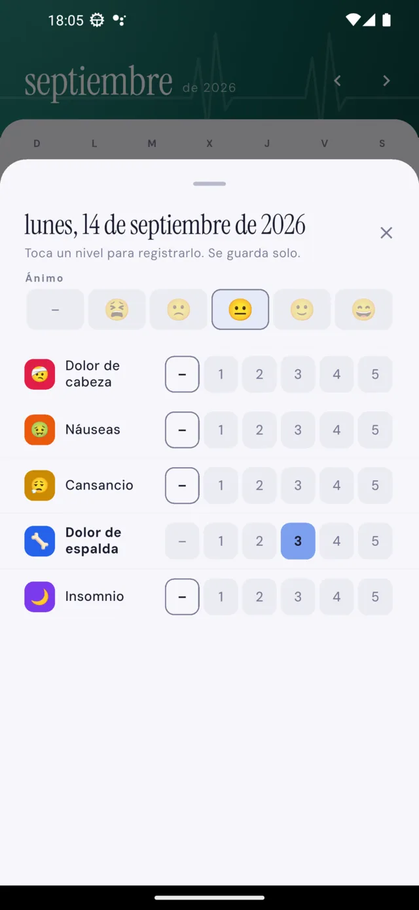
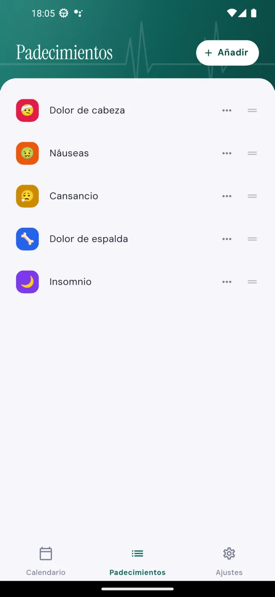
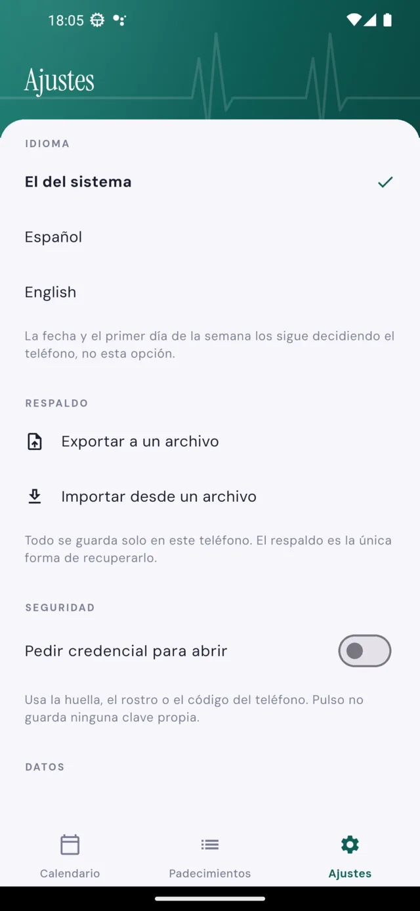

Anota tus padecimientos y cómo ha estado tu ánimo, y velo todo junto al mirar el mes. Nada más, y a propósito.
Pulso no calcula, no interpreta y no sugiere nada. Solo guarda lo que tú anotas y te lo devuelve ordenado, para que puedas mirarlo o contárselo a quien te atiende.
Cada día del calendario muestra su ánimo y los padecimientos que anotaste, con su intensidad. Las rachas se ven sin buscarlas.
Tocas un nivel del 1 al 5 y se guarda solo. Sin formularios, sin botón de guardar y sin campos obligatorios.
Los creas tú, con el nombre que quieras, un emoji y un color. Nada de listas cerradas ni vocabulario médico.
Puedes pedir la huella, el rostro o el PIN del propio teléfono al abrir la aplicación. Quien lo comprueba es Android, no Pulso.
Exportas tu historial a un archivo y eliges dónde guardarlo. Importar funciona igual, en sentido contrario.
La aplicación sigue el idioma del teléfono, y puedes cambiarlo a mano desde Ajustes cuando no coincida.
Cuatro pantallas y ya está toda la aplicación: el mes, el día, tus padecimientos y los ajustes.




Que una aplicación de salud prometa privacidad es fácil. Esta lo apoya en algo verificable desde fuera.
Pulso no pide el permiso de internet. Sin
android.permission.INTERNET, Android no le deja abrir
ninguna conexión de red, por mucho que el programa lo intentara. La
lista de permisos la publica Google en la ficha de la aplicación, no la
escribimos nosotros.
Android. Pronto en Google Play; ahora mismo está en prueba cerrada con un grupo pequeño de personas.
Escribir a Continum4Si quieres probarla antes de que salga, dínoslo por correo.